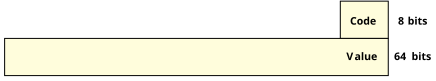

In addition to the synchronous Send/Receive/Reply services, the OS also supports fixed-size, nonblocking messages. These are referred to as pulses and carry a small payload.
Pulses pack a relatively small payload—eight bits (one byte) of code and 64 bits (eight bytes) of data. Pulses are often used to allow servers to notify clients without blocking on them; for example, to notify that data has become available on a hardware device.
